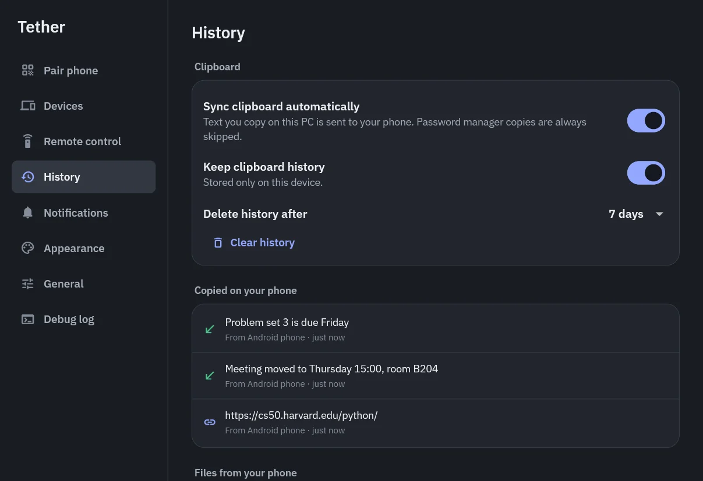
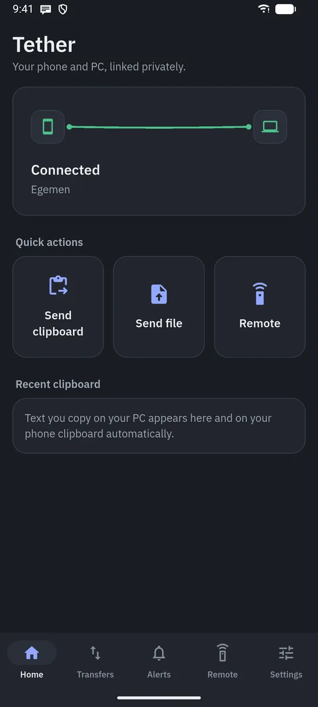
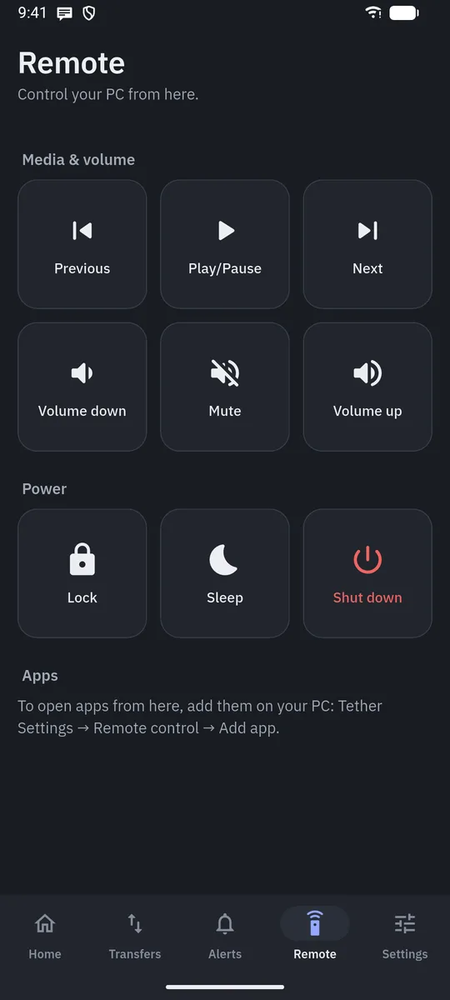
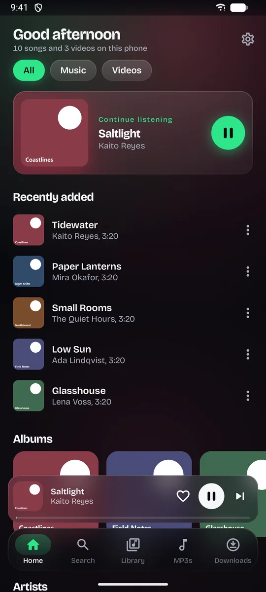
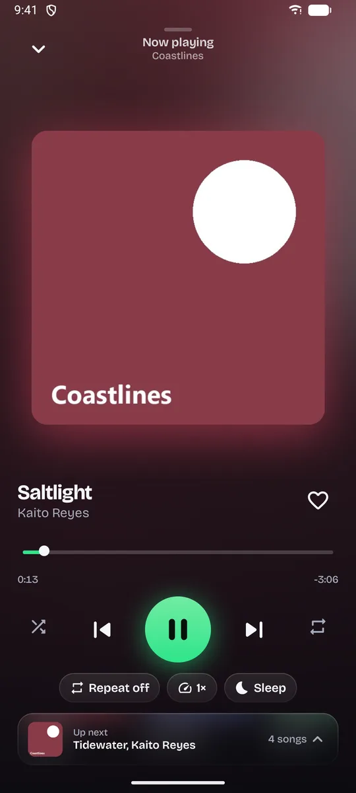
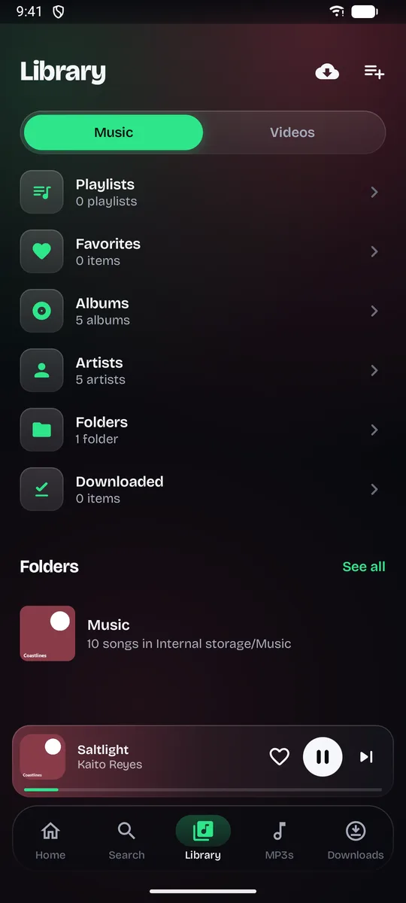
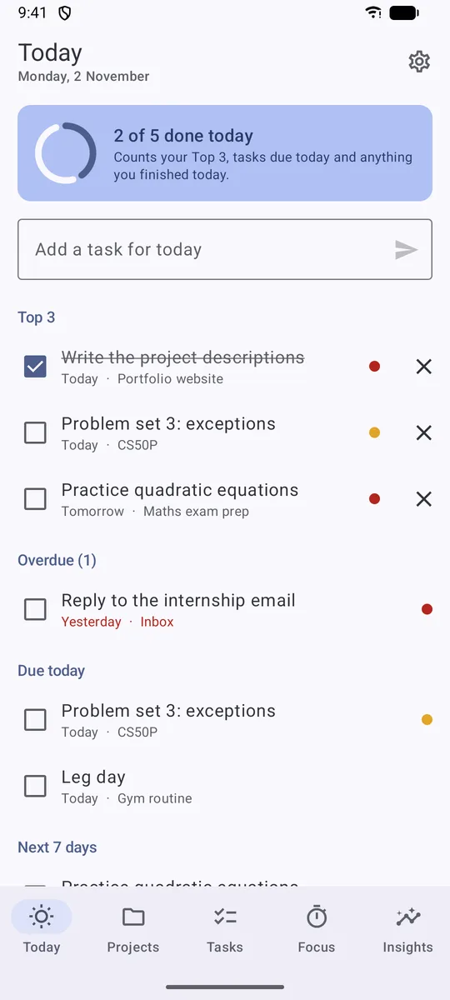
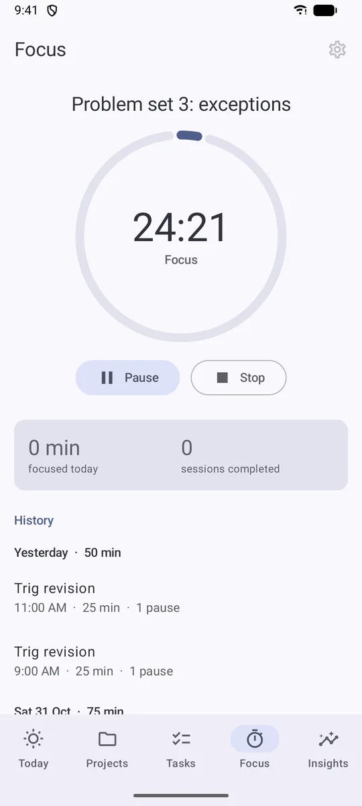
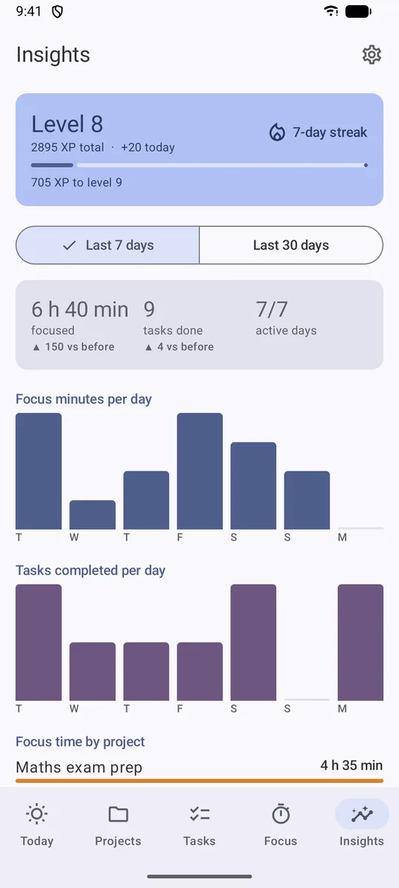

I build apps for problems I run into myself. I decide what an app should do,
how it should work and what it should look like, direct AI to write the code,
and test everything on my own phone and PC until it holds up in daily use.
Alongside that, I'm learning to write code myself in Python.
Apps I've designed and shipped
These are real apps I use every day. Claude, an AI model, wrote the code under my direction.
My part is everything around the code: what gets built, how it fits together,
and whether it actually works. Each project says what that looked like.
Tether
My Android phone and my Windows PC, linked without a cloud.
Windows + Android · Flutter, Dart, Kotlin · version 0.12 · in daily use



Copy something on the phone and paste it on the PC. Send photos and files both ways.
See phone notifications on the PC and dismiss them there. Use the phone as a remote
for music, volume, lock, sleep and shut down. Tether sits quietly in the Windows tray
and does all of this directly between the two devices.
Product & features
I wanted something like Phone Link that works with my phone and keeps my data at home.
I kept the lists short on purpose: the PC only lists what came from the phone, and the phone
only lists what came from the PC. Copies from password managers are never sent.
Architecture decisions
No accounts and no server. The phone and PC pair once by scanning a QR code, then talk directly,
encrypted end to end. It also works away from home, straight to the PC. The phone can only open
apps I've put on an allowed list, nothing else.
AI-assisted implementation
Built step by step with Claude: one milestone at a time, and each one checked by me before the next started.
Testing & debugging
I tested every feature on my own phone (Xiaomi HyperOS) and laptop. One bug I found: copying an
image on the phone made unreadable text arrive on the PC. We traced it to how HyperOS hands images
to apps and fixed it. A full test pass later turned up seven more bugs, which we fixed one at
a time, with me checking each fix. The project has 177 automated tests.
Code available on request.
LocalTune
A private, offline music and video player for Android. No accounts, no ads.
Android · Kotlin, Jetpack Compose, Media3



LocalTune plays the music and videos that are already on the phone. It has albums, artists,
folders, playlists and favorites, plays in the background with lock-screen controls, and has
repeat, playback speed and a sleep timer. It can also rebuild my YouTube playlists from a
Google Takeout export by matching them against the songs on my phone.
Product & features
I wanted a player with nothing in the way: no sign-in, no ads, no suggestions. An earlier version
had a link downloader. I took its screen out to keep the app focused on playing what you already have.
Architecture decisions
Files are played where they are. LocalTune never copies, moves or deletes anything. Playlists and
history are saved on the phone only.
AI-assisted implementation
Written by Claude from my feature list and design notes, one milestone at a time.
Testing & debugging
Used on my own phone with my own library. The reorderable song list also works with a screen
reader, which gets "move up" and "move down" actions instead of dragging.
Code available on request.
Orbit
Plan the day, focus, and see real progress. Everything stays on the phone.
Android · Kotlin, Jetpack Compose, Room



Each day starts with three priorities. Tasks belong to projects with deadlines and milestones,
a focus timer tracks the actual work, and Insights shows how the week really went. Everything
can be exported to a readable backup file.
Product & features
Levels and streaks are optional and earned from real work, with a daily cap so they can't be farmed.
Streaks allow rest days, so one day off doesn't wipe out a month.
Architecture decisions
Local first, no account. The timer is worked out from saved start and pause times, so it stays
right even if the phone kills the app or restarts mid-session.
AI-assisted implementation
Built with Claude in four phases: planning, focus timer, insights, then backup and polish.
Testing & debugging
Backups are checked completely before anything is restored, so a damaged file can't half-overwrite
your data. The timer is tested with a fake clock.
Code available on request.
Code I write myself
I'm learning Python by hand, in VS Code: first with Harvard's CS50P course, then with debugging
challenges where I find and fix the bugs myself, without being given the answer. These are small
programs I wrote, plus my fixes to a program I was given to debug. The output under each one
is real, from running the program.
Debugging challenge: grades
I was given a program that never crashed but gave wrong answers. I stepped through it with the
VS Code debugger to find the bugs instead of guessing.
def average(scores):
total = 0
for s in scores:
# Bug 1: replaced total each time, += adds to it. fixed from : total = s
total += s
return total / len(scores)
Keeps asking until it gets a real number, handles dividing by zero, and quits on "q".
def get_number(prompt):
while True:
text = input(prompt).lower()
if text == "q":
print("Quitting...")
sys.exit()
try:
x = float(text)
return x
except ValueError:
print("That is not a number. Try again with Numbers")
(q for quiting) Enter first number: 10
(q for quiting) Enter second number: 0
You cant divide it with Zero try again
(q for quiting) Enter first number: ten
That is not a number. Try again with Numbers
(q for quiting) Enter first number: 10
(q for quiting) Enter second number: 4
2.5
(q for quiting) Enter first number: q
Quitting...
Number guessing game
Picks a number from 1 to 20, gives hints, ignores guesses outside the range and counts attempts.
if user < 1 or user > 20:
print("Please enter a number between 1 and 20!")
continue
tries += 1
if user < number:
print("Too low!")
elif user > number:
print("Too high!")
Pick a number from 1 to 20: 10
Too low!
Pick a number from 1 to 20: 15
Too high!
Pick a number from 1 to 20: 25
Please enter a number between 1 and 20!
Pick a number from 1 to 20: 12
Too high!
Pick a number from 1 to 20: 11
Great job!
You took 4 attempts.
Play again? (yes/no): no
Thanks for playing!
BMI calculator
One of my first programs: converts centimetres to metres, rounds the result and sorts it into a category.
height_m = height / 100
BMI = round (weight / (height_m * height_m), 1)
print(f"Your BMI is {BMI}")
time.sleep(2)
if BMI < 18.5:
print("You are in category 'Underweight'")
elif BMI < 25:
print("You are in category 'Normal Weight'")
Welcome to BMI Calculator App
Please enter your weight and height in centimeters
Enter your weight 68
Enter your height in centimeters 176
Your BMI is 22.0
You are in category 'Normal Weight'
Thank you for using our BMI Calculator app, see you later!